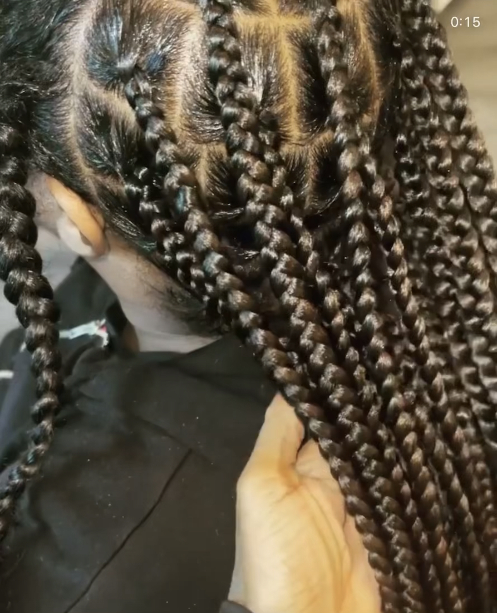
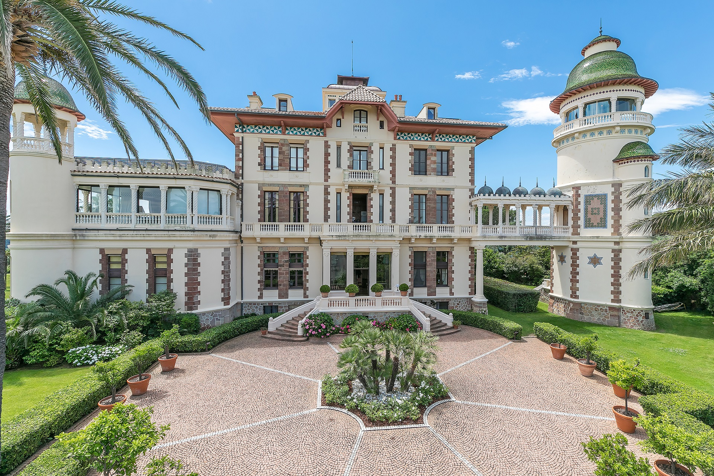

Karen - Things I Like
Cooking
So my favorite thing in the world to do is cook. I own every kitchen gadget known to man. It's super relaxing and dinner time has become sacred in my house.
I started cooking because I loved to eat, and I started really experiencing around my mid-20's. I'll cook the same thing a thousand times if that's what it takes to get it right.
Three things I love to cook:

Hairstyling
I liked doing my hair, every new style channeled a new me. Doing hair as a side hustle is cool too; I can gab and gossip with my clients, and make some money at the same time. Win-win.
I learned how to braid when I was 12, and I would practice on myself and my sister and my dolls. In college and while in the army I would do hair for money here and there. Three months before the pandemic, I went to a stylist to get my hair done and I left her home with the flu. I started taking clients during the pandemic and soon after, I made it an official business.
Top 3 least favorite hairstyles to do but favorite to look at:
House Hunting
Not much to say here; I love looking at houses. No, I'm not purchasing any time soon. But I love to look. At home I watch castle, mansion, and penthouse walk-through videos on Youtube.
When I was a kid, my mom would always take me with her when she looked at houses, and sometimes we'd spend the day going to different subdivisions around the city looking at the model homes. If they had any new construction or empty homes to look show, we'd look at those too. We still do this today.
All that, yet I hate moving.
